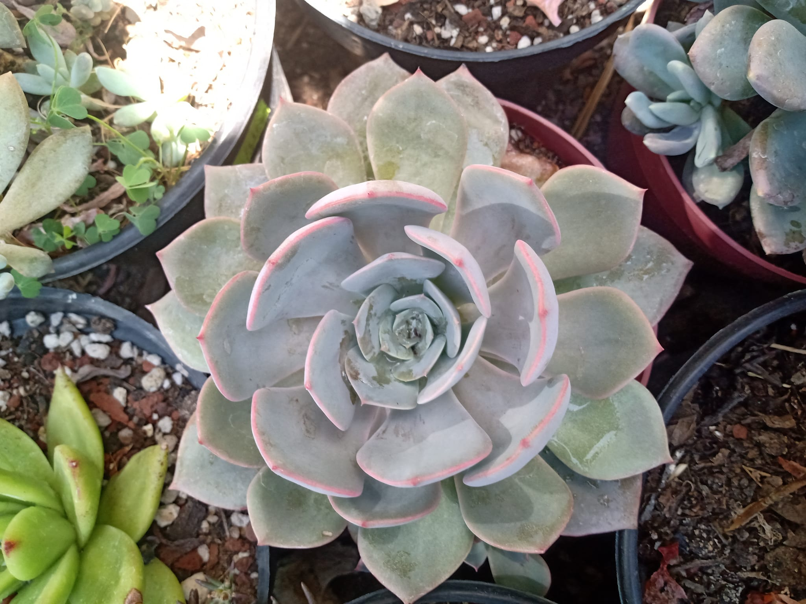
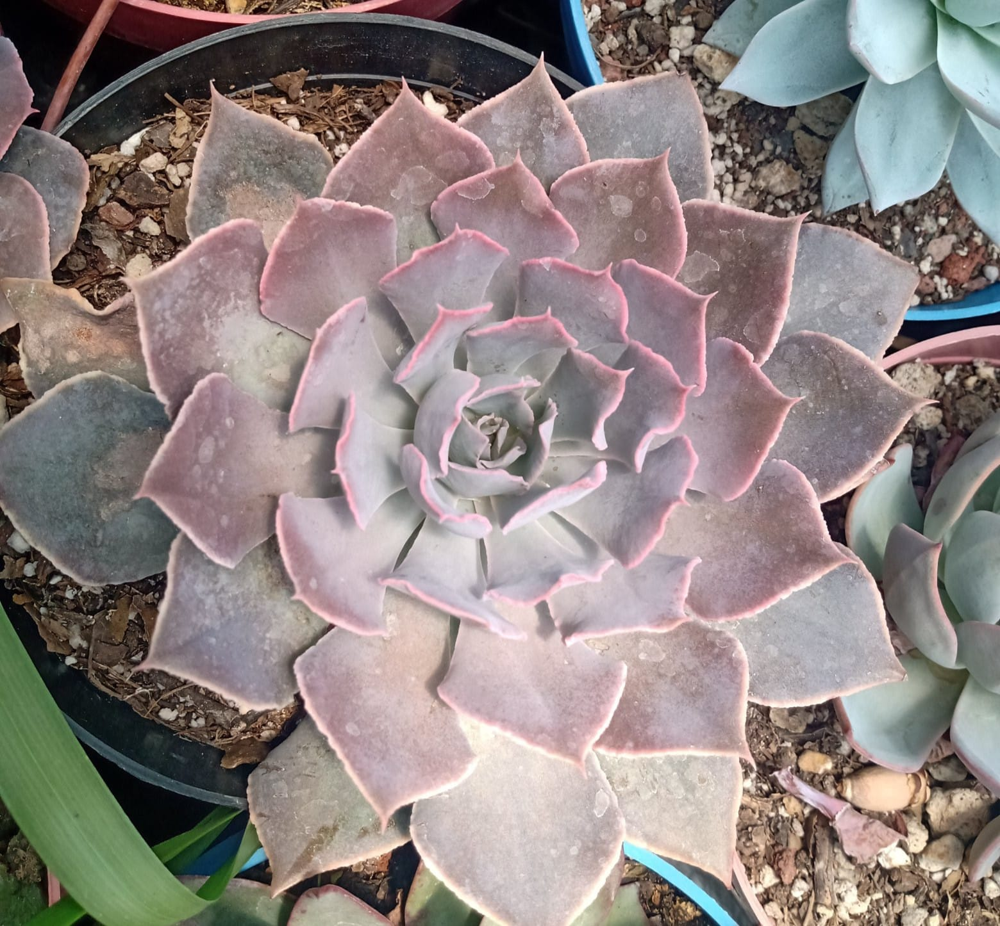
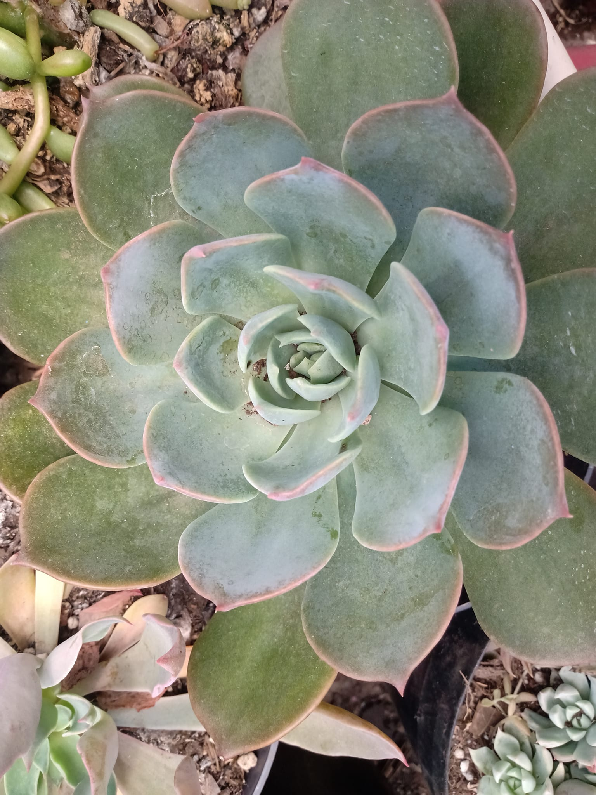
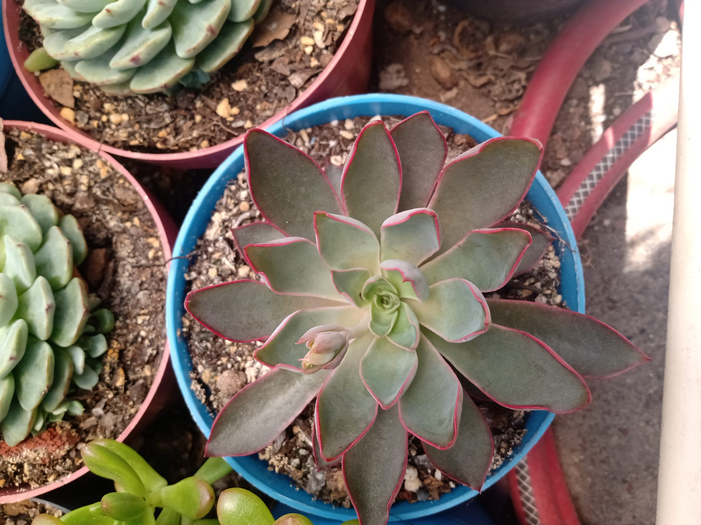
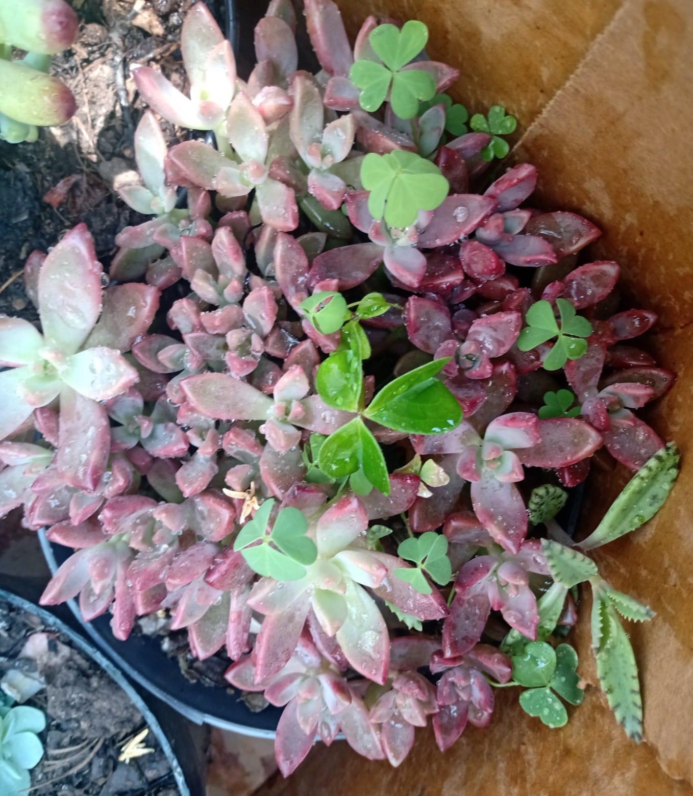
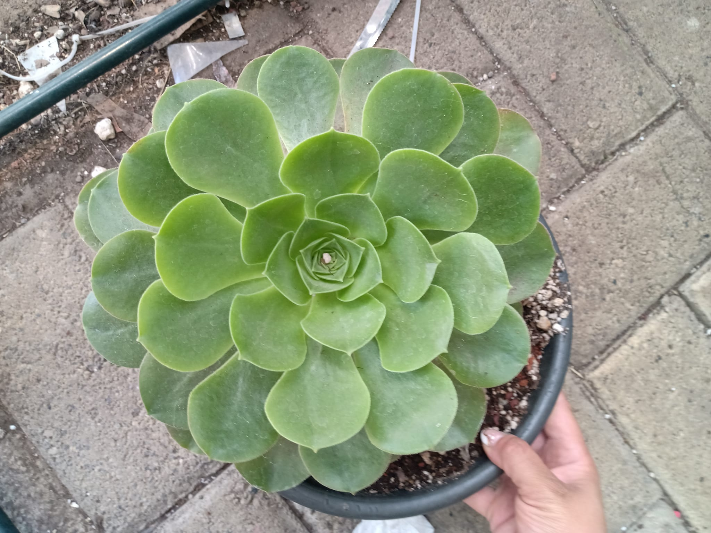

Minima white

Lecheveria son plantas ornamentales populares de pasatiempo de bajo
crecimiento. Su hábitat natural se encuentra principalmente en
México, con algunos de América Central, América del Sur, Estados
Unidos. Su hábitat natural favorece las zonas rocosas, los árboles y
las zonas secas. La especie puede ser muy variable, que puede ser de
hoja perenne o de hoja caduca. Las flores aparecen en tallos cortos
(cimas) que crecen a partir de rosetas compactas con follaje
colorido.
Neon Breakers

Es una suculenta en forma de roseta con bordes ondulados y arrugados
que tienen una textura de hoja inusual y sus bordes toman colores
intensos. Las rosetas crecen hasta 20 cm de diámetro. Puede alcanzar
unos 15 cm de altura. Se caracteriza por sus hojas intensas y
coloridas. Con la incidencia de la luz solar sus hojas pueden
transformarse desde un azul verdoso con un rosa pálido en las puntas
a un púrpura intenso y un tono rosa neón en las puntas de sus hojas.
Florece a finales del verano y principios del otoño. Sus flores son
de color rosa intenso y aparecen en tallos verticales violáceos.
Echeveria tequila

Muy pruinosa, puede crecer hasta 10 cm de diámetro y tiende a tener
mucho hijuelos. Requiere de sol filtrado de 6-8 hrs y mucho calor.
Riego moderado, sustrato que drene muy bien, especial para
suculentas Si requieres de este sustrato, búscalo en el apartado de
jardinería. Tu plantita va a necesitar un sustrato que drene muy
bien, si no cuentas con el, puedes comprarlo en la tienda, es
especial para ellas. Tenemos para clima templado, seco y húmedo.
Red Prince

Una suculenta formadora de rosetas con hojas de color marrón burdeos
delineadas en un rojo brillante que cambia de color cuando está a
pleno sol. … Al igual que con todas las suculentas, se necesita un
suelo bien drenado o pedregoso y prefiere un lugar a pleno sol con
muy poca agua. Proteger de las heladas.
Gratopetalum Bronze

También conocida como Crepúsculo, Graoptosedum Vera Higins o
Grapatosedum Alpenglow, es una especie sin origin natural ya que es
híbrido entre la Graptopetalum Paraguayense y la Sedum Stahlii.
Destaca por ser una de las suculentas más faciles de ciudar por su
resistencia, ya que requiere muy poco riego y se adapta bien a
cualquier sustrato. Esto la hace una excelente opción para quienes
apenas inician en este mundo.
Aeonium Canariense

Sus tallos son muy cortos, erectos, gruesos, que no ramifica
(normalmente) o con muy pocas ramas que son horizontales. Grandes
rosetas, aplastadas, muy redondeadas en su contorno, debido al muy
marcado solapamiento de sus muy amplias puntas de hojas, entre 15 y
30 (hasta 45) cm de diámetro.